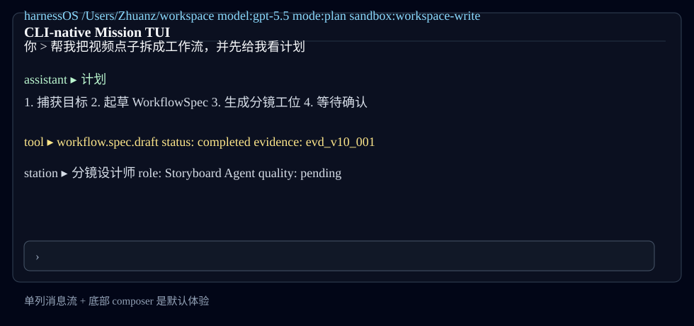
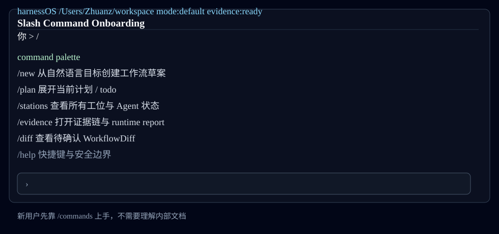
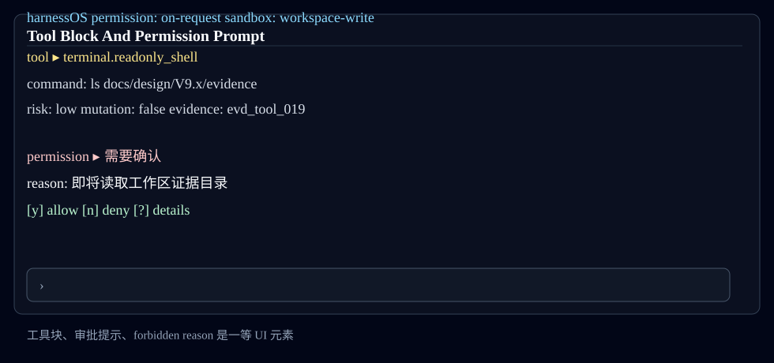
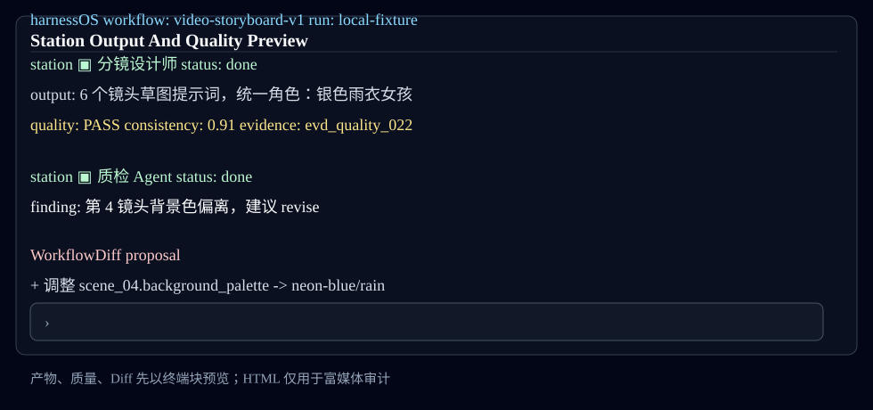
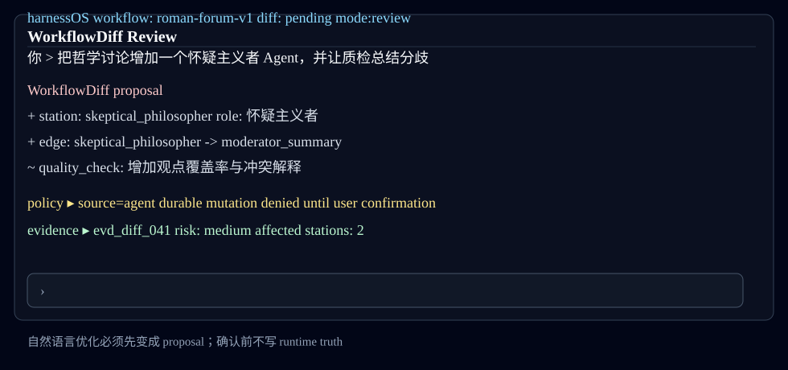
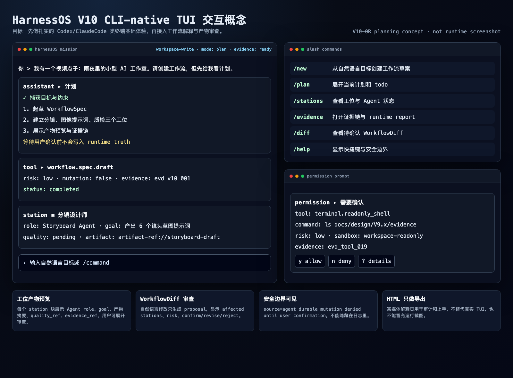

React/Ink 终端原生 TUI
selected
新建 HarnessOS-native Mission TUI，但首屏保持 Codex CLI / Claude Code 类似的单列消息流、底部输入框、工具块和审批提示。
优势
- 最贴近目标基础体验
- 键盘优先
- 易做快照测试
- 可逐步接入工作流解释块
代价
- 需要 Node/Ink 包
- 需要 runtime bridge
- 媒体展示能力有限
目标：先把 HarnessOS 的基础 TUI 做成接近 Codex CLI / Claude Code 的稳固终端工作台，再逐步接入工作流解释、产物预览和审计导出。
PASS V10 主方向从“工作流 cockpit”修正为“终端原生 Mission TUI”。
V10-0R 只证明规划修订 ready for review，不证明 runtime TUI 已完成。V10-1 才能开始真实 TUI shell 实现。
| 区域 | 目标体验 | 验收重点 |
|---|---|---|
| 顶部状态线 | 显示 workspace / model / mode / sandbox / evidence status。 | 一行内可读，80 列终端不溢出。 |
| 主消息流 | 用户、助手、计划、工具、产物、错误都以块状消息出现。 | 单列优先，不默认大 dashboard。 |
| 底部输入框 | 自然语言目标、slash command、快捷键提示。 | 始终可见，执行中有明确 busy 状态。 |
| 工具/审批块 | 命令预览、allow/deny、forbidden reason、evidence ref。 | 用户确认前不发生 durable mutation。 |
| 工作流解释块 | station role / goal / tools / quality / evidence 可展开。 | 来自 read model，不构造 runtime truth。 |
| 交互对象 | 用户动作 | TUI 反馈 | 安全边界 |
|---|---|---|---|
| Composer | 输入自然语言或 slash command | 创建消息块，显示 plan/todo 或 command palette | 只提交 intent，不直接执行 durable mutation |
| Tool Block | 展开工具详情或批准/拒绝 | 显示命令预览、sandbox、risk、evidence ref | 高风险动作必须 human confirmation |
| Station Block | 展开工位产物 | 显示 Agent role/goal/tools、产物摘要、质量结果 | 产物必须带 artifact/evidence refs |
| WorkflowDiff Block | 确认、修改或拒绝变更 | 显示 affected stations、risk、forbidden reasons | 确认前不得 apply / publish / run |
selected
新建 HarnessOS-native Mission TUI，但首屏保持 Codex CLI / Claude Code 类似的单列消息流、底部输入框、工具块和审批提示。
优势
代价
fallback
保留现有 OpenHarness-compatible Textual TUI，作为兼容入口和回退，不作为 V10 主品牌体验。
优势
代价
supporting
动态 HTML 用于上手、审计和多媒体结果汇报；它不是主交互界面，也不能冒充真实 TUI 截图。
优势
代价





该 PNG 由本地 HTML/CSS 设计板截图生成，是 V10-0R 的交互概念图，不是 runtime TUI 截图。

旧的 cockpit 图保留为历史证据，但它不是新的 V10 方向，也不能冒充真实 TUI 运行截图。
文件：docs/history/design/V10.x/superseded/v10-0-cockpit-first/host-generated-cockpit.png
| 场景 | 用户看到什么 | 必须证明 |
|---|---|---|
| 第一次创建工作流 | 输入自然语言目标后，TUI 显示计划块、WorkflowSpec 草案和“等待确认”。 | 未确认前无 durable mutation。 |
| 观察多 Agent 工作流 | 消息流中出现每个 station 的 Agent 角色、状态、产物摘要和证据链接。 | 每个状态来自 read model / evidence refs。 |
| 审查产物质量 | 展开 station 块后看到质量 Agent 检查、失败原因、建议修复。 | 产物预览必须带 quality_ref 和 evidence_ref。 |
| 自然语言修改工作流 | 系统先输出 WorkflowDiff proposal，并提示 confirm / revise / reject。 | proposal-first，不自动 apply。 |
这些 prompt 是后续生成真实风格概念图的输入；当前 SVG 是本地可复现规划证据，不是 runtime evidence。
本报告不得解释为 production ready、Agent executor ready、complete Workflow Studio ready、unrestricted terminal worker ready 或 full multi-Agent orchestration ready。